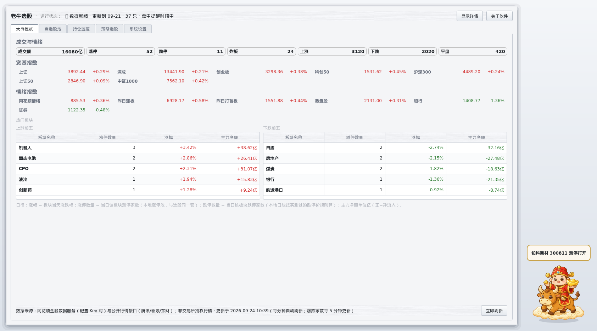
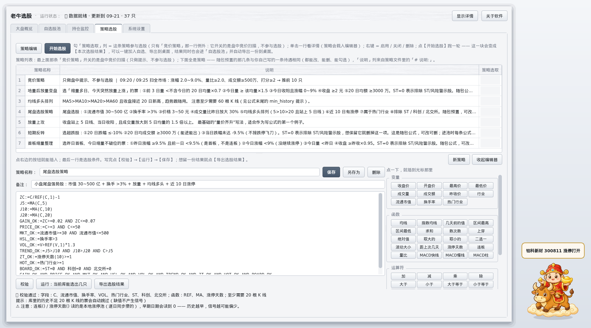
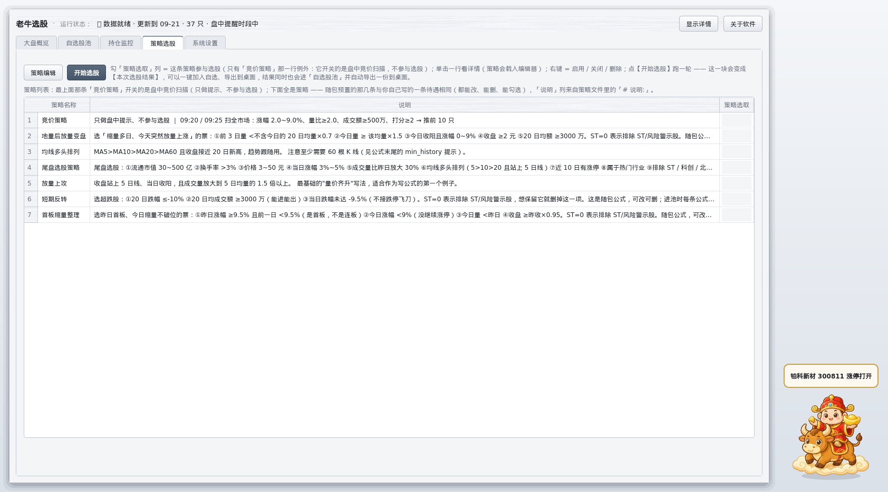
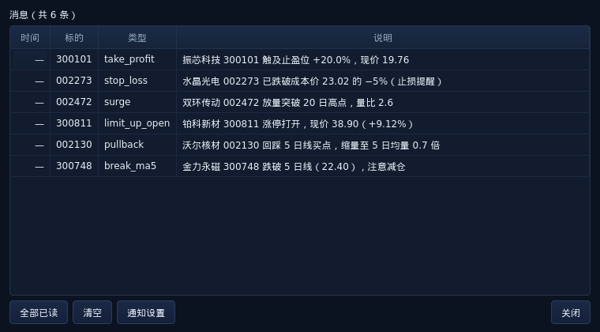
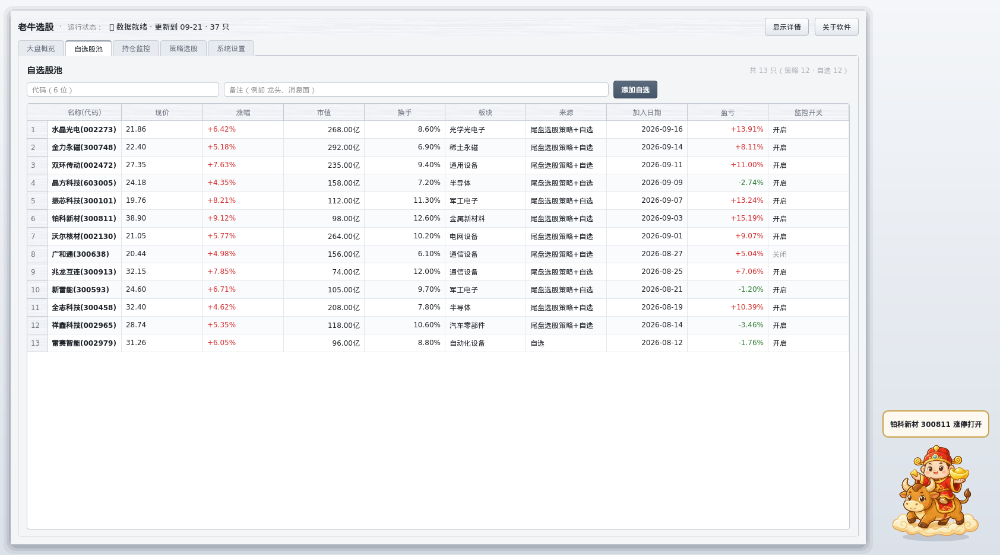
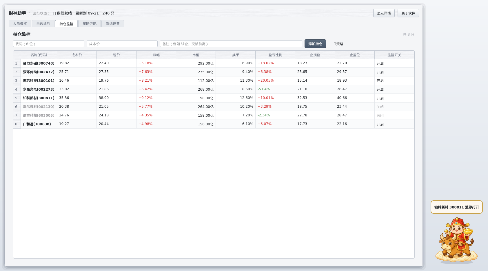
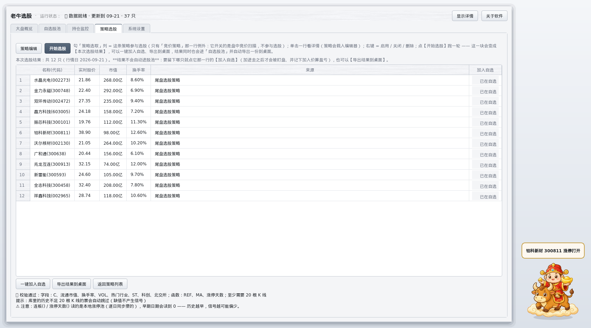
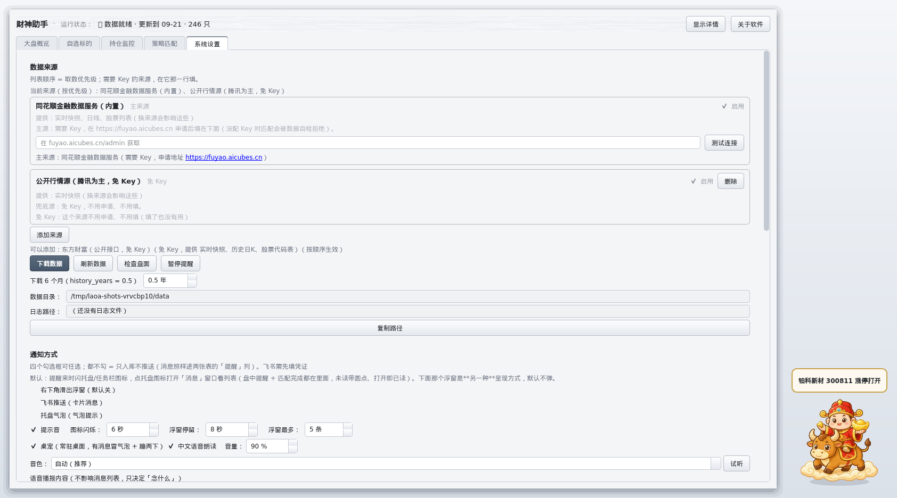
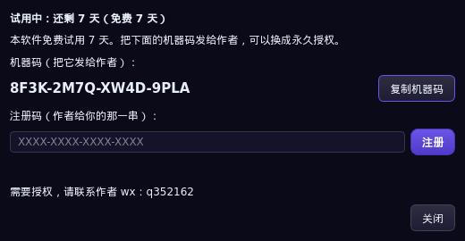

大盘概览：一屏看清今天
成交额、涨停 / 跌停 / 炸板家数、上涨下跌家数，宽基指数（上证 / 深成 / 创业板 / 科创50 / 沪深300 / 上证50 / 中证1000），情绪指数，外加热门板块上涨前五与下跌前五（带涨停 / 跌停家数与主力净额）。
Windows 单机版 · 免安装 · 免费试用 7 天
它不是行情软件，是给你的同花顺 / 通达信配的一个助手 —— 帮你把 「看哪些票、什么时候该动手」这件事变得省事，盘中有情况就在桌面上喊你。
两个主打：最简单的策略编辑 + 盘中监控。
免费试用 7 天，注册后终身使用（单机 · 绑定机器）。下载有问题或要注册，联系微信 q352162。
⚠️ 下载准备中，请联系作者微信 q352162（发布时把 downloads/LaoniuTrader.zip 放进去即可）。

盯盘的人通常有三个麻烦：
自选十几只、持仓好几只，哪个跌破止损、哪个涨停打开，全靠自己来回切。
比如「流通市值 30~500 亿、今天涨 3~5%、放量一倍」—— 要么不会写公式，要么写了不知道能不能跑。
想复盘却没有一份自己条件的清单，第二天还是凭感觉。
老牛选股就是补这三块：策略编辑最省事、盘中自动盯、结果能留档。
:= 中间变量、: 输出线、COLORRED 这类写法，画图语句（DRAWICON、STICKLINE…）自动忽略。MA / EMA / REF / HHV / LLV / SUM / COUNT / CROSS / SMA / DMA / KDJ / RSI / BOLL 等七十多个函数都能用。C、C/REF(C,1)-1、量比() 自动变成盘中口径）；收盘后自动改用当天收盘的 K 线。用的是哪套会写在结果里。


成交额、涨停 / 跌停 / 炸板家数、上涨下跌家数，宽基指数（上证 / 深成 / 创业板 / 科创50 / 沪深300 / 上证50 / 中证1000），情绪指数，外加热门板块上涨前五与下跌前五（带涨停 / 跌停家数与主力净额）。
名称(代码)、现价、涨幅、流通市值、换手率、板块、来源（哪条策略选出来的）、加入日期、从加入到现在的盈亏、监控开关。可以按代码、备注一键添加，右键删除。

成本价、现价、涨幅、市值、换手、盈亏比例，以及自动算好的止损位与止盈位，每只票单独开关监控。

跑完选股，结果只列出来、不自动进自选：每行一个【加入自选】按钮，选中的才进股池；也可以【一键加入自选】，或导出到桌面的文本文件（桌面\老牛选股\老牛选股助手-选股结果-<日期>.txt）。

同花顺 Key、数据来源、通知方式（飞书 / 托盘 / 桌宠 / 中文语音）、自选上限、T 策略参数，一处改完一键保存。

LaoniuTrader 文件夹，双击里面的 老牛选股.exe，不需要安装。
下载即用，全部功能开放 7 天，不用填任何注册信息。
注册后永久可用、不再收费。授权绑定这一台机器，换机需要重新签发。
打开授权窗口复制机器码发作者，拿到注册码填进去点【注册】即可，当场生效、不用重启。
联系方式：微信 q352162（购买、注册、报错都加这个）。
用到了「流通市值 / 换手率 / 现价 / 现涨幅 / 现量比 / 现换手」的策略会这样：这几个数来自实时快照，收盘后拿不到，所以条件一律不成立 —— 交易时段再跑就正常了。不依赖这几个数的策略不受影响：开盘时间里跑选股用的就是实时数据（现价拼出「今天」这根 K 线，C、量比() 都是盘中口径），收盘后改用当天收盘的 K 线。
这是设计如此：开盘时间里跑的选股用实时数据（此刻的现价/量），不在开盘时间才用本地 K 线。所以盘中不同时刻点【运行】会得到不同结果，而且盘中那一根的「后复权价」在部分票上跟现价不是同一个数（用 现价 写绝对价位条件最稳）。每次运行都会写清用的是哪套口径，例如「📊 本次口径：盘中实时（10:05）」。
—？同样是拿不到实时快照。收盘后、或者数据来源临时取不到时就是这个样子 —— — 表示「没有这个数」，不是 0。
Windows 默认只装了一个中文女声。设置页会列出这台机器上实际装着的音色；要男声就自己去「Windows 设置 → 时间和语言 → 语音」里添加中文男声，加完这里就能选到。
Key 只为「完整历史数据」——选股与回测要用。不填也能用：行情概览、自选与持仓的实时提醒走免 Key 的公开源。
不会。它不接券商、不自动交易，只做「选出来 + 提醒你」。
配置了 Key 走同花顺的行情服务，没配 Key 走公开行情接口（腾讯为主、新浪兜底）。都不是交易所授权行情，用于研究与自用。
本软件是行情数据的整理与提醒工具，不构成任何投资建议，不保证收益。策略选出来的是「值得关注的清单」， 不是买入信号；历史表现不代表未来。股市有风险，买卖决策与后果由使用者自行承担。
数据来自第三方公开接口，可能存在延迟、缺失或错误，请以券商交易软件的实时行情为准。
本页所有截图都是演示数据：其中的股票名称、价格、涨幅、盈亏是为了展示界面而编的样例，不是真实行情，更不是推荐或实盘业绩。